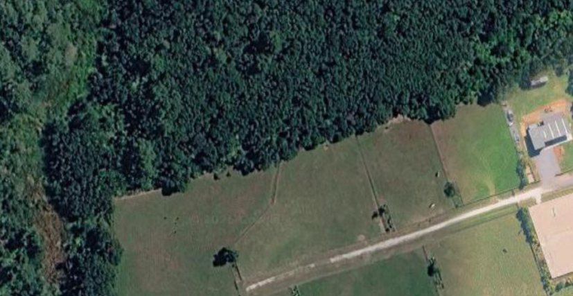
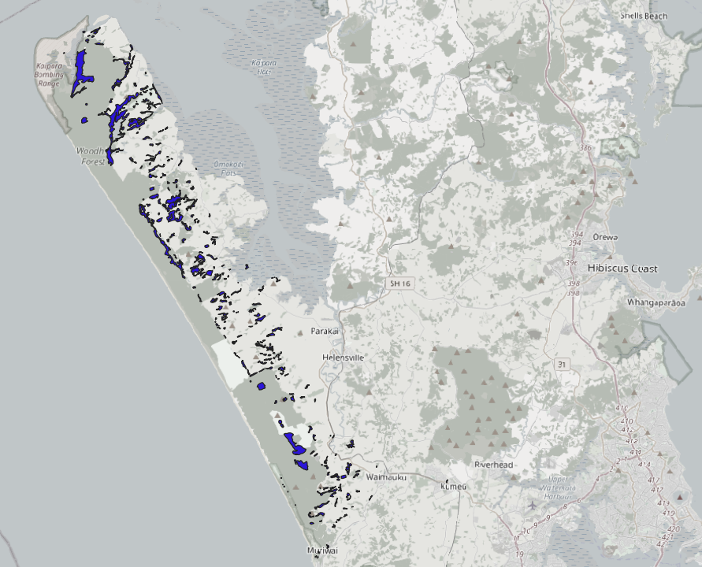

26th July 2026
26.07.2026
Wait... THAT'S a dune forest?

[Satelite image of a 'dune forest' taken from Google Maps.]
The conundrum started when I was wrangling table joins for the first time in QGIS. I'd sourced some council data on ecosystem types around Auckland, and was perturbed to find that "dune forests" were showing up far inland, in areas I had visited and knew for certain did not feature sand dunes. I thought of course that I had wholly messed up the table join and that therefore nothing in the map was reliable. But a thorough check revealed no issues with the placement of other well-known habitats / forest types.

[Screenshot from QGIS with dune forests marked in blue.]
It turns out, inland dune forests aren't uncommon in West Auckland. But why are they called that, given the ones I've seen simply look like regular forests?
The answer lies beneath the forest and topsoil. In a bizarre twist, the sand dunes are still there today, they're simply buried (sometimes referred to as fossilized dunes). Strong westerly winds blowing sand inland caused the dunes to migrate further in from the coast, where eventually vegetation took hold and stabilized them through a gradual process known as ecological succession (Walrond, 2009). The video below explains how ecological succession can turn bare sand dunes into forests over time, i.e. 'dune forests'.
[A video explaining ecological succession using the Indiana Dunes National Park as an example (Anderson, 2025).]
Dune forests make up a unique ecosystem in New Zealand, favouring trees and other vegetation that can thrive in sandy, fast-draining, nutrient-poor soils. Unfortunately, dune forests here are critically endangered, with less than 1% remaining nationally. Most remaining dune forests are 'seral', meaning they're in the early stage of ecological succession. Here you'll find mostly scrub plants such as kānuka. The dune forest shown in the satelite image above, by contrast, is much older and is possibly dominated by broadleaved trees - perhaps karaka, kohekohe, tītoki, māhoe, and pūriri (Singers et al., 2017). Being on private land, I wasn't able to visit this one in person however, so I couldn't say for sure.
Sources
- Anderson, C. (2025, April 15). How sand dunes change into a forest - Ecological succession | Indiana Dunes National Park [Video]. YouTube. https://www.youtube.com/watch?v=kgojhuSnwo4
- Singers, N., Osborne, B., Lovegrove, T., Jamieson, A., Boow, J., Sawyer, J., Hill, K., Andrews, J., Hill, S., & Webb, C. (2017). Indigenous terrestrial and wetland ecosystems of Auckland. Auckland Council. https://knowledgeauckland.org.nz/publications/indigenous-terrestrial-and-wetland-ecosystems-of-auckland
- Walrond, C. (2009, March 1). Dune lands. Te Ara – The Encyclopedia of New Zealand. https://teara.govt.nz/en/dune-lands